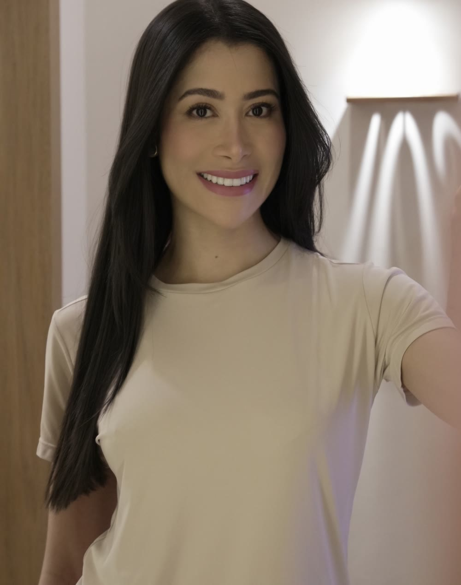
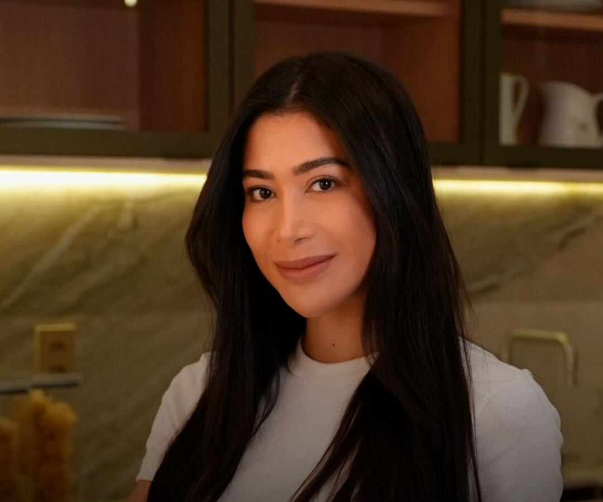

Dermatologia · Lauro de Freitas
Dra. Kássia Mutti
Pele e cabelos acompanhados ao longo do tempo, com planejamento e naturalidade.
Médica dermatologista · CRM-BA 32653 · RQE 27984. Membro da Sociedade Brasileira de Dermatologia e professora. Atua com tricologia, injetáveis e tecnologias no consultório do Infinity Empresarial, em Lauro de Freitas.

Por onde começar
O que você quer cuidar agora?
Escolha o assunto e leia no seu tempo. A indicação de qualquer tratamento é individual, definida em consulta.
Meu cabelo está mais ralo
Queda, afinamento dos fios e a risca aparente.
Cabelo e couro cabeludoInjetáveisQuero suavizar marcas de expressão
Toxina botulínica e preenchimento, com planejamento.
Toxina e preenchimentoTecnologiasOuvi falar de Ultraformer
O que é, para que pode ser indicado e o que esperar.
TecnologiasPrimeira consultaQuero uma avaliação
Escuta, dermatoscopia e um plano para você.
A consultaTambém: Sobre a Dra. KássiaOnde atendo
A consulta
Escuta, diagnóstico e planejamento.
A consulta dermatológica é o momento de ouvir, examinar com cuidado e montar um plano para acompanhar a pele e os cabelos ao longo do tempo.
“Nosso objetivo é acompanhar a sua saúde cutânea e capilar ao longo do tempo, com segurança, ética e refinamento técnico.”Dra. Kássia Mutti
Tempo para ouvir as suas queixas, a sua história de saúde e a sua rotina.
A consultaAvaliação dermatológica com dermatoscópio, que amplia a pele e o couro cabeludo.
A consultaPlano terapêutico individualizado, com foco em naturalidade.
A consultaRevisões para acompanhar a pele e os cabelos e ajustar o plano.
A consultaTricologia
Cabelo e couro cabeludo, passo a passo.
A perda de volume dos fios costuma ser gradual. Investigar a causa cedo ajuda a definir o cuidado certo para cada caso.
- Etapa 1Conversa
Quando começou, como é a queda e o que já foi tentado.
- Etapa 2Tricoscopia
O couro cabeludo e os fios examinados com dermatoscópio.
- Etapa 3Exames
Exames de sangue, quando ajudam a entender a causa.
- Etapa 4Plano
Ativos tópicos e orais ajustados à avaliação e aos exames.
- Etapa 5Consultório
Terapias em consultório, quando indicadas, e revisões.

Nas palavras dela
“Uma consulta dermatológica é um momento de escuta, diagnóstico e planejamento cuidadoso.”Dra. Kássia Mutti
“Não existe uma ‘receita de bolo’ ou quantidade padrão de unidades. Cada rosto possui uma dinâmica muscular única.”
Dra. Kássia Mutti“Nas aulas, meu objetivo é que cada aluno compreenda o porquê de cada escolha: a avaliação, a indicação e os cuidados que fazem parte de uma conduta segura e individualizada.”
Dra. Kássia MuttiConteúdos
Para ler antes da consulta.
O que a Dra. Kássia publica sobre pele, cabelos e procedimentos.
Escuta, dermatoscopia e plano individualizado.
Ler ↗TricologiaRisca do cabelo aparente?Como é a avaliação tricológica.
Ler ↗Toxina botulínicaNão existe receita de boloPor que o planejamento é individual.
Ler ↗TecnologiaO que é o UltraformerUltrassom micro e macrofocado, indicação e naturalidade.
Ler ↗SkincareComece pela área dos olhosUma pele mais fina, que pede atenção.
Ler ↗FotoproteçãoProteção solar no esporteRoupa com proteção UV e protetor nas áreas expostas.
Ler ↗Consultório
Infinity Empresarial, Lauro de Freitas.
Na Rua das Pitangueiras, em Lauro de Freitas.
R. das Pitangueiras, 248 · Lauro de Freitas – BA · 42700-000
Como chegarConfirme o dia e o horário pelo WhatsApp (71) 99286-2374.
Dúvidas frequentes
Perguntas comuns
A Dra. Kássia atende queixas de cabelo?
Sim. Ela atua com tricologia: queda, afinamento dos fios e couro cabeludo.
Ela faz toxina botulínica e preenchimento?
Sim, entre outros procedimentos. A indicação de qualquer procedimento é individual, definida em consulta.
Atende homens?
Sim. Queda de cabelo e calvície masculina também são avaliadas na consulta.
Atende plano de saúde?
Confirme pelo WhatsApp as formas de atendimento aceitas.
Qual é o horário?
Atendimento com hora marcada. Confirme o dia e o horário pelo WhatsApp.
Agende
Pele e cabelos com planejamento. Comece pela avaliação.
Consulta com hora marcada no Infinity Empresarial, Lauro de Freitas. Fale pelo WhatsApp (71) 99286-2374.